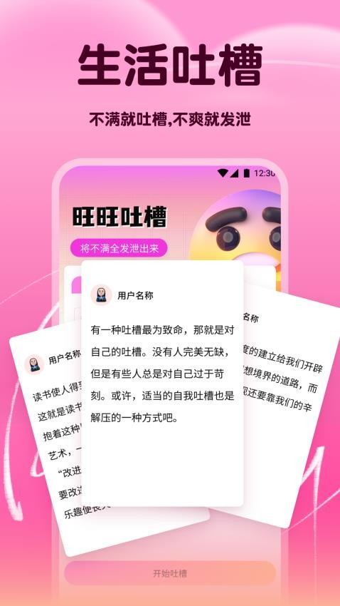

第一次用 SafeW？这篇带你五分钟上手加密聊天
SafeW 是一款把端到端加密做成默认选项的通讯工具，本文从零开始带你认识它的核心功能，从下载安装到跑通第一条加密消息，三分钟上手，从此再也不用担心聊天内容被偷看。
这篇能帮你从完全不懂到用起来——不需要任何加密知识基础
你可能听说过"端到端加密"这个词，但觉得太技术、离自己太远。又或者你手机里装着微信、Telegram、WhatsApp，但从没想过自己发的消息到底有没有被中间某个服务器偷偷看过。
SafeW 就是这样一个简单的答案——它把加密这件事从"需要你懂技术才能打开"变成了"默认就开着"。你不需要搞懂什么是 Signal 协议、什么是双棘轮算法，只需要像用任何聊天工具一样打字、发送，剩下的它替你做。
它到底是干嘛的？一个生活化类比
想象你去邮局寄一封信。普通的信件就像你平时在各种聊天软件里发的消息——信是敞开的，邮递员、分拣员、甚至路上捡到信的人都能看见内容。
SafeW 不一样。它给你一个带锁的信封。你在自己家里把信放进信封、锁上，然后才能交给邮递员。邮递员拿到的是一个锁着的信封，他这辈子也打不开——只有收信人那边有一把配对的钥匙，能把锁打开、取出信来看。
更妙的是：这把锁不是固定的。你每写一句新话，就换一把新锁。就算有人不知怎么地撬开了其中一把，他也只能看到那一小句的内容，之前和之后的全部安全。
这就是 SafeW 做的事——把你发出去的每一条消息、每一张图片、每一个文件，都先在你手机上"锁好"再送出去。服务器只负责搬运，连看都看不懂里面是什么。感兴趣可以去它的官网进一步了解。
五分钟上手：从下载到发出第一条加密消息
好，不说概念了。拿出手机，跟着做——从头到尾五分钟搞定。
第一步：下载安装
去 SafeW 的下载页面，选择你的系统（iOS、Android、Windows、Mac 都支持），下载安装包。安装过程和任何 App 没区别，一路"下一步"就行。

第二步：注册账号
打开 App，它会问你要一个 SafeW ID——这是你在 SafeW 世界里的唯一标识，可以自己随便起，比如 my_secret_chat。注意，SafeW 不强制绑定手机号，你也可以选择用邮箱注册，或者干脆匿名。这一点和 Telegram、WhatsApp 都不一样，它真的不收集你的手机号。
第三步：加一个好友
注册完进入主界面，点击右上角的"+"号，可以通过 SafeW ID 搜索添加联系人。让对方把他的 SafeW ID 告诉你，搜一下、点"添加"，就搞定了。
第四步：发出第一条加密消息
进入和对方的聊天窗口，在输入框里打一句话，比如"这是我用 SafeW 发的第一条消息"，点发送。
就这么简单。你可能什么特别的界面变化都没看到——但这条消息已经在你手机上被加密、服务器收到的是一串看不懂的字符、对方那边用只有你们俩知道的密钥解密后才能看到。全程没有任何明文暴露给中间环节。

恭喜！你刚刚发出了人生第一条真正意义上的端到端加密消息。
上手后先玩这三个功能
跑完第一次之后，别急着走人。下面这三个功能是 SafeW 区别于其他聊天工具的核心价值，建议你先体验一下。
功能一：加密文件传输——没有大小上限
试试给对方发一个文件。PDF、压缩包、视频都行——SafeW 对文件大小没有硬性上限。你在别的工具里可能遇到过"文件太大无法发送"，这里不会有这种困扰。大文件会自动切片分块传输，每块都独立加密。
你会看到什么：选择文件后，它的传输过程和普通聊天消息一样流畅，甚至不会弹出"正在加密"的提示。这意味着什么：你发出去的文件，服务器不知道它是什么类型、多大、里面有什么。哪怕服务器被攻破了，攻击者拿到的也只是一堆加密碎片，拼不出来原文件。
功能二：万人群加密——企业级的规模
拉一个群试试。SafeW 支持万人规模的加密群组——而且群聊也是默认端到端加密，没有像 Telegram 那样"普通群不加密"的尴尬设计。
你会看到什么：建群界面和任何聊天工具一样简单，可以邀请 SafeW ID 搜索成员。群聊消息和私聊消息用的是同一套加密机制。这意味着什么：如果你是团队负责人，你可以放心地在 SafeW 群里讨论项目细节，不用担心消息被云服务商读取。普通群聊和加密群聊没有任何区分——因为所有群聊本来就是加密的。
功能三：防截屏 + 阅后即焚
这两个功能放在一起说，因为它们解决的是同一个问题——你发出去的内容，不想被对方留存。
阅后即焚很好理解：发消息时设置一个时间（5秒、10秒、1分钟、1小时、24小时），对方阅读后到点自动销毁，双方设备都删干净。
防截屏是更狠的一招：如果对方在和你的加密聊天里截屏，系统会自动弹出警告提示，告诉你"对方正在截屏"。这不是软件层面的提醒，而是系统级的防截屏机制——在支持的设备上，甚至可以做到让截屏画面直接黑屏。
你会看到什么：设置阅后即焚后，消息旁边会出现一个小沙漏图标；对方截屏时，你的聊天窗口会弹出红色警告。这意味着什么：不是所有内容都适合永久留存。比如临时的密码、一次性的地址、敏感的讨论内容——用这两个功能，你发出去的东西就有了"保质期"。关于防截屏的系统级实现原理，在 SafeW文档 里有详细说明。
小白的三个常见疑问
疑问一：和 Telegram / WhatsApp 有什么区别？
简单说，Telegram 的端到端加密只在"秘密聊天"里才启用——普通聊天、普通群、频道全部不走加密。绝大多数 Telegram 用户一辈子都没进过秘密聊天，也就是说他们发的消息其实和明文没区别。
WhatsApp 做得好一些，一对一和小群默认加密，但它不支持私有化部署、必须绑手机号、群规模上限也较低（大约1000人）。
SafeW 的加密是全场景默认开启——私聊、群聊、频道、文件、音视频通话，全部加密，没有例外。而且它支持企业把服务器架在自己内网里，数据完全不出企业控制。
疑问二：密钥滚动和指纹核对是什么？我需要管吗？
密钥滚动你完全不需要管——它是后台自动运行的安全机制，每发一条消息就换一把新锁，哪怕某一把锁被撬开了，攻击者也只能看到那一句话。
指纹核对是你可以主动做的安全确认。当你和对方第一次进行音视频通话时，SafeW 会显示一串六位数字组成的"安全指纹"。你让对方也打开他那边的指纹，然后通过另一个渠道（比如见面口头核对、或者一条已验证的 Signal 消息）比对数字——完全一致就说明通话没有被中间人劫持。
不是每次都要核对。第一次加好友、换设备、或者 SafeW 弹出"指纹已变更"警告时再核对就行。
疑问三：听说 SafeW 支持企业私有化部署？个人用户能用吗？
能用，而且个人用户也能从中受益——因为私有化部署意味着你可以把 SafeW 服务器架在自己的机器上，数据完全由你自己控制，连 SafeW 官方都看不到。
不过这需要一些技术基础。作为新手，先用公共服务器版本就行，体验到 SafeW 的核心价值（默认加密、零日志、不采集手机号）之后，如果有更高的安全需求再考虑私有化。
写在最后
SafeW 不是要替代微信、Telegram、WhatsApp 这些工具。它的定位很清楚——当你有不想被任何人偷看的消息要发时，用 SafeW。
上手之后，如果你想继续深入，建议去 SafeW 的文档里看看——里面有关于密钥滚动、指纹核对、企业私有化部署的详细说明。了解这些底层机制能帮你更踏实：你用的不只是一个"看起来安全"的聊天工具，而是真正把加密做成了默认选项的通讯软件。
这套 SafeW 的资料在 GitHub、Gitee 和 GitCode 三个平台都做了备份，国内网络访问后两个会比 GitHub 顺畅不少。